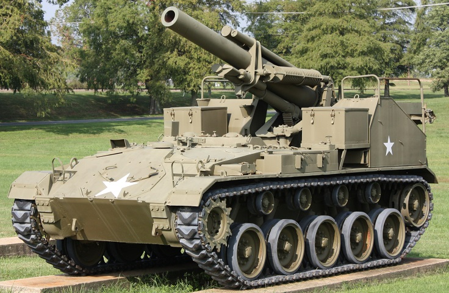

M41 Gorilla
Призначення: легка самохідна гаубиця для безпосередньої вогневої підтримки дивізій. Країна: США. Роки виробництва: 1945. Експлуатація: 1945-1953. Кількість: 85 шт. Озброєння: 155-мм гаубиця M1. Броня: 12.7-15 мм. Маневреність: 56 км/год, два двигуни Cadillac Series 44T24. Екіпаж: 5 осіб (плюс додатковий розрахунок на окремій машині супроводу). Суть у бою: надійна комбінація легкої швидкісної бази та величезної вогневої сили. На відміну від громіздких M12 та M40, ця самохідка могла стрімко маневрувати на пересіченій місцевості, рухаючись на рівні з легкими танками розвідки. Відомі битви: Корейська війна. Цікава особливість: неофіційне прізвисько «Gorilla» (Горила) САУ отримала від екіпажів за характерну кремезну форму та агресивний гучний звук пострілу масивного 155-мм ствола на такому відносно легкому шасі. Модифікації: T64 HMC: експериментальний прототип. M41 HMC: серійна версія, побудована на базі легкого танка M24 Chaffee.
